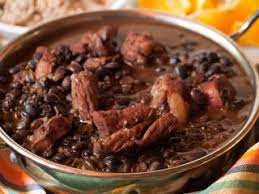

feijoada
What is feijoada?
A Brazilian or Portuguese stew of black beans with pork or other meat and vegetables, served with rice.
Where did it originate from?
It is widely believed that the beginnings of feijoada stem from slavery in Brazil, where slaves put together the scraps of leftover beans and meat from their owners to create a kind of stew. ,However, academics have recently challenged
this theory, claiming the origin of feijoada comes from the European settlers . Beans became one of their main foods thanks to its low-maintenance and lost-cost production. They added in cuts of meat
and started to create a stew that could be cooked in large quantiti
s and didn’t demand much effort to make. Regardless of the origins, nowadays feijoada is a truly Brazilian dish that is enjoyed and celebrated all across the world.
Feijoada is easy and simple
Its a simple dish that anyone can make, but it does require a little time, but if you want to make something good, you have to put time and effort.
ingredients
- One pound of dry black beans
- 2 quarts water, plus more as needed
- 3 ounces dried beef, chopped
- 2 smoked pork chops-bones removed and reserved, meat cut into long chunks
- 4 ounces of bacon, coarsely chopped
- 12 ounces linguica
- 2 (four ounces) links Italian sausage
- 1 onion chopped
- 6 cloves of garlic, minced
- 1 teaspoon ground cumin
- 1/2 teaspoon ground coriander
- 1 pinch cayenne pepper(optional)
- 1 tablespoon chopped Italian parsley
Steps
-
Make the stew: Place black beans into a large bowl, cover with water,and soak for 8 hours, or overnight.
- Place drained beans into a heavy pot with 2 quarts water. Bring to a simmer over medium-high heat. Reduce the heat
to low and simmer until beans are cooked but very firm, 1 1/2 to 2
-
Stir chopped dried beef into the pot. Add bay leaf and pork chop bones, stir and simmer over low heat for another 2 hours.
-
Meanwhile, cook bacon in a large, dry skillet over medium heat until not quite crisp. Add linguica and Italian sausage links; cook, stirring often, until meats are brown, about 10 minutes. Remove meats, reserving accumulated fat in the Slice Italian sausage into chunks
-
Brown onion and garlic in the reserved drippings in the skillet over medium heat until onion is translucent and soft, stirring to deglaze the pan, about 5 minutes. Season with cumin, coriander, cayenne pepper, salt, and black pepper. Add parsley; cook and stir until wilted, about 2 minutes
